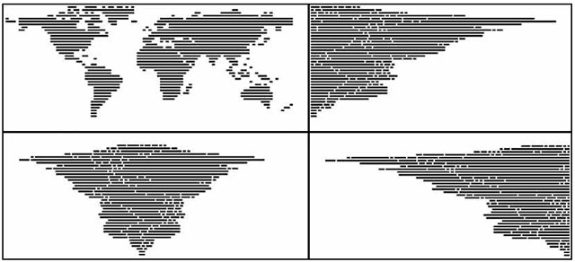

digital works

— 101 Patterns by NCLZ via But Does It Float
— CodeProfiles by W. Bradford Paley
“CodeProfiles looks at the computer program as text and visually comments on how code is read by people… the amber line follows the fixation point, tracing how people might read the text, line by line; the white line follows the insertion point and flows like the programmer’s thoughts, calmly in one place then jumping around to make other parts of the code perform; and the green line moves along the execution point of the program, creating wide swaths where the code was executed thousands of times and appearing as a thin thread where the processor rarely visited.” (from exhibition tag)
“Paley thereby foregrounds the conceptual nature of all digital art, which is always driven by a language formulating instructions.”
The Whitney museum in New York had an exhibition called Programmed: Rules, Codes, and Choreographies in Art. It made light of a lot of themes of why I make what I make and why we’re doing what we’re doing in the interaction capstone.

— 4th wall from Wall Drawing #289 by Sol LeWitt
This Sol LeWitt mural coincidentally looks a lot like one of the scroll charette things I made. Which isn’t that crazy; it’s just lines and rules and language. What everything is. But how the two are made changes its outcome. A browser vs. crayon and a wall. Reproducibility and multiplicity is a thing to think about with these rule based works. It coincides with the thought that letters are sensitive but not precious.
I guess I’m wondering how redundant it is to keep making stuff that’s based on these ideas. What about rules and programs? It’s the starting point.
— remote from Lorna by Lynn Hershman Leeson, an early example of non-linear interactive work
— Abstract Browsing 17 03 05 (Google), 2017 by Rafaël Rozendaal. Weaving output from rapier loom machine.
Rectangles. Browsing + plug-in → tapestry.
— Reconstruction 7 by Jim Campbell, LED lights and cast-resin screen
Reducing the digital screen to its material: light and an overlaying screen.


— gifs made with Drawbot from this year

— mix CD I made in high school
Thoughts so far—
I’m not really interested in closed-control or specifically designed outcomes. Even if the outcome is unexpected for other people, it’s more satisfying when the outcome is unexpected for everyone. I want to learn from other people’s makings as much as my own. I’m interested in open-ended systems. It’s also why I’m interested in tools and type design. Tools carry the creation of something else. A typeface needs to be used, not just displayed, and it’s meaning changes as it is used. Letters are sensitive but not precious.
I still keep thinking about the idea of text-based communities. What could they be, beyond a forum or something like Twitter?
What is truly native about the browser?
A lot of sites function to redirect us to content. What about stand-alone sites? How can an experience be native to its environment, rather than a metaphor of something that exists? Everything is metaphor, a translation. What about the raw materials and ideas of the internet?
That’s what atom≠pixel means: the base units of digital and analog are not the same, so the larger structures created from that are not equivalent. So why attempt translation from physical to digital? Basically, art serving to be representational vs. art as art.
I’m wondering about making the intangible structures of the internet/browser explicit, its expanding rectangles, link pathways, but also its relationship to the whole world—because again, the internet has expanded the dimension of the world; it’s not another, separate world.
So instead of thinking of the internet as branches of “walled gardens”, I’m trying to think of it as one room expanding (like in the Sims 4…).
Because the webpage or Google Doc is an organic (but potentially immortal), editable document, eternal as the same object but ephemeral in its appearance, function, state, etc. Like a piece of land. That can be copy and pasted. But not named the same.
What is natural about the internet? It’s completely man-made. We’ve built this expansion, but do we understand it?
I’m seeing why investigating the internet for what it is, content-wise and structurally, rather than whether it’s good or bad is a way of understanding it. Since the internet is not a separate world but a layer of it, it will proportionally reflect the dominant culture of commercialism and commerce. But it’s not just that (and it’s not realistic to think of it as something where commercialism and commerce are the minority).
The internet vs. an internet: it’s whatever you want it to be.

— PEOPLE Berlin 2018 website with scroll animation
Notable sites found via hoverstat.es: Avara, Automatic Type Design, You say potato, I say fuck you, Department of New Realities, justtypestuff.com.
— stephennixon.com

— MEEK Typographic Synthesizer

— Viktor, robotic chalk drawing machine
Was reintroduced to Jürg Lehni, and looking at his work beyond Apple Talk got me thinking about not just human error affecting digital platforms, but how Earth’s physics affect precise, programmed tools.
The physics of the internet vs. the physics of Earth
His project “Viktor” is also a nice resolution of the conflict between genuine roughness of material and electronically powered machines.
Jürg was also one of the people who made Scriptographer. Go figure.
The intersection of type, tech, and our relationship to digital forms and the internet is where it’s at.

Python/Drawbot → erroneous bitmapped inkjet print → scanned image
“Moiré patterns appear in many different situations. In printing, the printed pattern of dots can negatively interfere with the image. In television and digital photography, a pattern on an object being photographed can interfere with the shape of the light sensors to generate unwanted artifacts. They are also sometimes created deliberately – in micrometers they are used to amplify the effects of very small movements.”
— Wikipedia
Moiré as evidence of noise and distortion that occurs from attempting to compress atoms into pixels or from layering patterns (adding dimension). Also the creation of motion from shifting perspective on static objects.
Static body, moving image vs. active body, static image.

— Arduino receipt printer that outputs posts from the subreddit r/showerthoughts
An idea that has been brewing for a few months now: print my Instagram feed.
Using a receipt printer can relate to commerce on the internet and in real life, and the form of the receipt paper (a long scroll) can be a physical representation of the infinite scroll. Also relates to the idea of search history / viewing history as evidence of consumption. The low resolution of thermal receipt printers also corresponds to the pixel ≠ atom idea.
Using a commercial receipt printer instead of an Arduino one changes the function of the printer from documentation of business transaction to recorder of digital interaction. Consumption of monetarily-valued objects to consumption of mind space.

— prototype site
I made another CSS typeface, though there’s not really much attention paid to interaction (though that’s not really the point of this). I want to figure out how this thing can actually be typed in its animated form. I don’t think it’s possible with current font technology; it’d be more of a browser hack. Right now it’s just key presses changing opacity.
— what you see is what you get by Cem Eskinazi
Not too profound but nonetheless another way to reveal structure.
Caligraft is a project by Ricard Marxer Piñón about “crafting computational calligraphies”.
Not about imitating or simulating calligraphy, but reconsidering what motion can mean in the digital context, with influence by generative art.
The website is also pretty outdated and slow, not even loading anymore. How can websites be archived yet remain interactive?
— Letter & Spirit by Dexter Sinister
The font Meta-the-Difference-Between-the-Two-Font-4-D intends to bridge historical precedents with parametric design. Sinister asks “How to keep things moving? … what if we make one of those parameters time itself?”
I had the quote “I follow the spirit of the law not the letter” saved before watching this video but did not know that it comes from judicial practices and precedents. I was considering trying to define letters in terms of language in order to abstract letters using letters… but after trying to think about how to define each letter, it was basically impossible since the image, perception, and understanding of a letter also depends on its context. An E can be described as 3 horizontal lines parallel to each other and connected by a vertical line. But without the vertical line, the E could still be read as an E. Additionally, the definition doesn’t describe how far apart the 3 horizontal lines are. Letters are weird! Though they are pure shape, they can’t be mathematically defined like a circle or square. It’s quite simple: an E is an E if it looks and reads like an E. Though letters are visual, they are at the core immaterial and completely abstract.
I have also been reading about Ludwig Wittgenstein, a philosopher who focused on language’s limits and function. A frequently cited quote of his is “What we cannot speak about we must pass over in silence.” Since letters are the basic unit to written language, it’s quite difficult to break them down any farther. They are not merely line compositions. So I have just come to accept a letter for a letter and to keep moving on. It is what it is. What I have come to observe is the changing meaning of “movable type.” For Latin characters, it began with Gutenberg, moved into wood type, hot-metal typesetting, phototypesetting, typewriters, (what else?), and now digital typesetting. Movable type now can involve fluid time and movement, live transformations. Can type ever become unstuck from rectangles?
After hearing about Metafont again, I decided to actually look into what it is and what it makes. It doesn’t aesthetically work too well but it’s undeniably impressive: “The Concept of a Meta-Font” by Donald Knuth. I though about making a parametric typeface, which I kind of did for the CSS typeface project, but after seeing Metafont and Spectral, I’m not actually into it that much, weirdly. It’s not really type design, and too many broad parameters means the typeface loses its identity.
Everything is a game made by David OReilly (he is against apostrophes). I found out about it through TCI (OReilly is blunt and straightforward). The flopping animals are great. It reflects the fundamental abstractness of digital media, how the physics of it are not actually governed by reality. The game allows people to explore the world from a variety of scales and perspectives as well as explore the absurdity of abundance. OReilly’s works have been acclaimed for being in between a game, interactive experience, and film.
